Seeing as the Baht (Thai currency) is the cheapest EVER and we really could afford to stay in a nice hotel (<$100 per night) for 3 days.... we stay in the cheapest place in our book in a corner of the city that NO ONE can find. $8 bucks doesn't get you too much in Bangkok. It wasn't clean or nice.... but I got to pick the next hotel.
The first minute after we left the hotel, we literally met a man who was a tour guide on his way to lunch who told us where everything was and what to do for 3 days (not that we did everything) but he was soooo nice and he even walked us to our first destination. The Thais are either like him, or trying to really stick it to you. For example, he took us to within a 1/4 mile of the Royal Palace, walking the next few blocks 3 people attempted to either give us a tour of the palace, or tell us it was closed today and we should do this other thing with them. After 3 weeks of this, you lose trust in everyone there.
The Palace was cool, a combination of Western Buildings, Thai Temples and Chedi's (their version of a Buddhist stupa (thingy Buddha is buried under (looks like a Russian onion dome (call for details if you still don't get it)))).
| 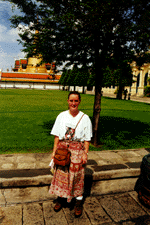 | For the Grand Palace and a Wat in Chaing Mai, you must cover your legs. Angela is wearing a nice sarong, wait for the Chaing Mai pictures to see what I had to wear. |
| This is the monk who greets you as you enter the religous area of the Grand Palace. | 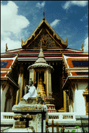 |
| Here is another of that same monk. | 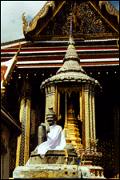 |
| 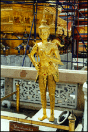 | We thought this Golden Prince was pretty cool. |
| The dominate building in this religous area is a giant golden chedi. | 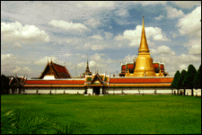 |
| 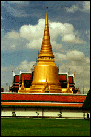 | 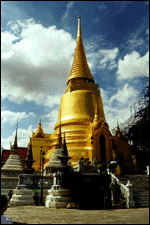 |
| 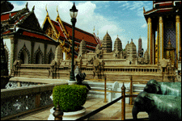 | This is a scale model of a Khmer (Cambodian Style Stupas) Temple complex. We don't know if it is supposed to be Sukothai, Ankor Wat, imaginary or some other site. |
| Apparently one of the Rama kings like these status that Chinese traders used for boat ballast and collected them. This one is a Chinese Soldier. | 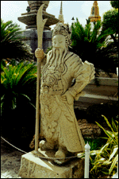 |
| This is supposed to be Western Soldiers. | 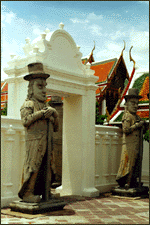 |
| 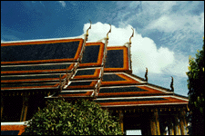 | The roofs are alway these beautifully tiled majestic pieces of artwork. The blue seems to mean Royal and Green means Holy. Notice the giant cranes at the end of the roofs. |
| The Royal Family Members are buried under these Chedis. | 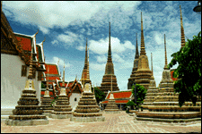 |
Dinner, we walked 6 miles, thinking it was only another block after block 3, to the best meal in Thailand. Gay men own this fish restaurant on a lovely pier in the Chao Piara River (main river in Bangkok). We had whole fish steamed with a lemon sauce and Tiger Prawn BBQ with a lime, coriander, red pepper sauce.
After dinner we went to a local night market, which was pretty neat and full of foreigners (very crunchy) watching western movies in the bars.
{kind=link}
{kind=link}
{kind=link}
{kind=link}
{kind=link}
{kind=link}
{kind=link}
{kind=link}
{kind=link}
{kind=link}
{kind=link}
{kind=link}